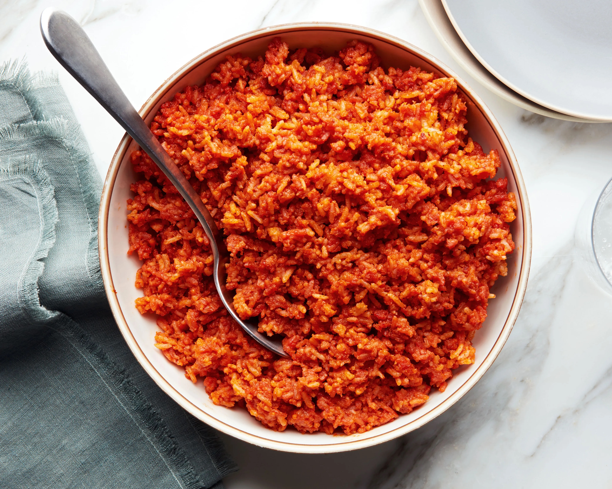

Jollof Rice

Description
If you're a novice Nigerian trying to make it in this Naija life, you need to have a staple Nigerian dish.
Look no further. JOLLOF RICE is here :)
It is classic. It is hearty. It is simple.
Feast on...
Ingredients
credit to https://www.theodinproject.com/lessons/foundations-recipes
- 4 Tablespoons of Canola oil
- 1 Tbsp butter
- 4 Fresh tomatoes or one 14.5oz can of diced (no salt)
- 1 6oz can Tomato paste
- 4 Red onions
- 2 Red bell peppers
- Crayfish
- 4 Habanero pepper
- 4 1/2 cups of long-grain parboiled rice
- 2 cups of chicken stock
Spices
- Maggi or Knorr cubes
- salt
- cayenne pepper and black pepper
- white pepper
- Bay leaves
- curry powder
- garlic or onion powder
- ginger
- thyme leaves
Steps
- Heat about 4 tablespoons of canola oil and butter in a medium-sized pot on medium heat and throw in some chopped red onions. Allow the onions to fry until the redness starts to slightly fade off.
- Next, pour in your tomato paste and let it fry with the onions. Make sure to stir the paste consistently to avoid burning. Do this for about 10 mins, or until the paste fully fries in the oil. Add in your crayfish for an extra tasty flavor.
- Blend some tomatoes, onions, habanero peppers, and red bell peppers together until you achieve a smooth consistency.
- Pour in the blended mixture into the pot and fry it together with the tomato paste.
- Add all your spices and mix. Cover the pot and allow the tomato to fry in the oil. Add more oil if necessary. You really want to let the tomato fry to remove the slappy sour taste, so make sure you don’t rush this process. I would recommend letting it fry for about 20-30 mins. Be sure to continuously stir the mixture to avoid burning.
- At this point, while the tomato is frying, begin to wash your long grain parboiled rice. Make sure to get rid of as much starch as possible by washing the rice until the water used becomes very clear. This helps to prevent the rice from sticking together when cooking.
- Once the tomato is done frying, add your chicken stock to the mix and taste to see if it requires any salt. Add salt if necessary and mix.
- Now add in your washed rice (and a bit of water if necessary to cook the rice) and mix it together with the fried tomatoes. Turn down the heat to the lowest on your burner and cover the pot. I personally like to cover the pot with aluminum foil before putting on the lid just to make sure the heat stays within the pot without escaping from the lid hole.
- Allow the rice to cook for about 30 minutes.
- After about 30 minutes open the pot and properly combine all the ingredients together. Cover the pot again, and let it cook for an additional 10 minutes or until the rice has fully blended in with the mixture.